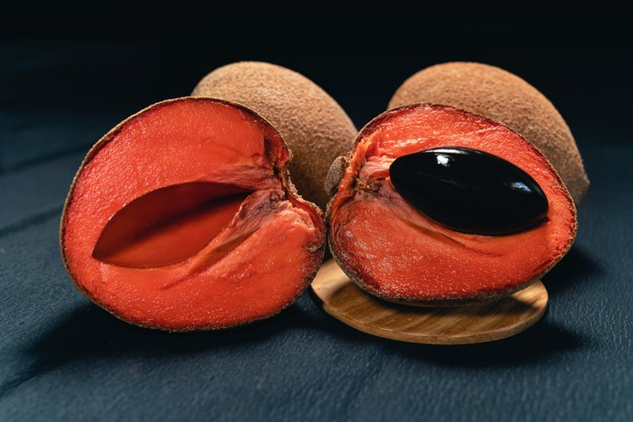
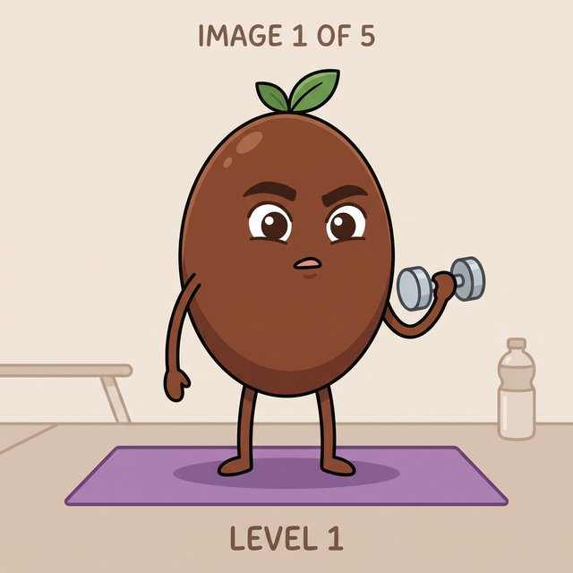
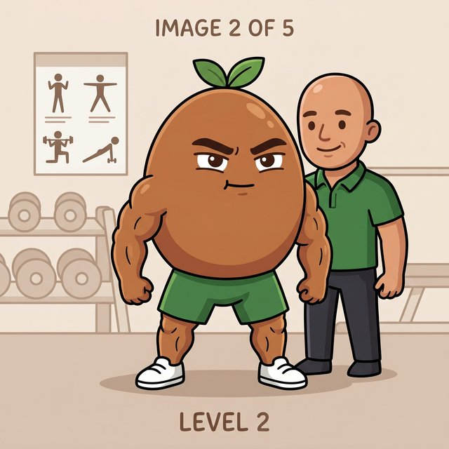
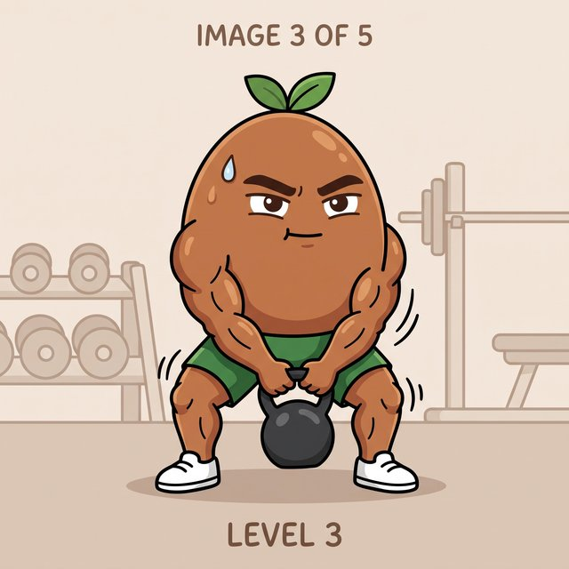
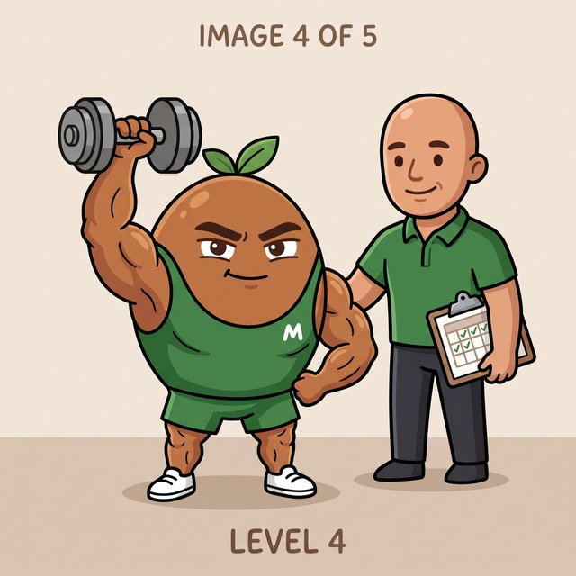
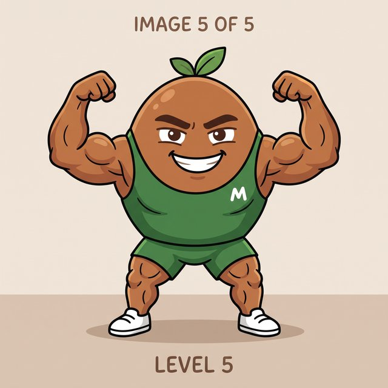

Log what you eat by search, voice, barcode or photo. Mamey Planner calculates your calorie and macro target based on your goal, and helps you stick with it — free, no ads, no artificial limits.
The mamey — also called zapote (Pouteria sapota) — is a tropical fruit native to Mesoamerica: rough brown skin, a dense, generous salmon-orange flesh, with a flavor somewhere between sweet potato, honey and almond. It's been grown and eaten in Mexico since long before the Spanish arrived.
In colloquial Mexican Spanish, "mamey" is also slang for someone muscular, strong, built — a physique that's as generous as the fruit's own flesh. "Está bien mamey ese cuate" is a common, affectionate way of saying someone's jacked.
That's where the app's name comes from: a character that literally starts as a pit and, with consistency, becomes mamey. That's why the mascot grows with you — it's not just a cute metaphor, it's the actual joke behind the name.

The best-known nutrition apps charge to unlock the basics. Mamey Planner exists to change that.
Help people build better eating habits and reach their body recomposition goals, without cost, complexity or advertising getting in the way.
Be the most complete free, open-source alternative to commercial nutrition apps, available on any device.
A stable v1 as a web app first. Already open source for anyone to use or improve. Native apps with health integration, next.
Five ways to log, zero unnecessary friction.
Verified Open Food Facts database, not uncontrolled crowdsourcing.
Say what you ate and the amount and food get parsed automatically.
Point your camera at the product, identified instantly.
Identifies the food on your plate. You choose the AI provider and bring your own key.
Generates a full day's meals matching your target macros, plus a nutrition chat that knows your goal.
Weight, body fat % and waist over time, with a trend chart.
Four steps, from a new account to a calculated target.
Sex, age, height and activity level — just once.
Cut, bulk, recomposition, or maintain.
Real TDEE and suggested macros, ready to use or adjust.
The dashboard shows how close you are, every day.
Every consecutive day you log your food, your mascot levels up — right there on your dashboard. Same "visible habit" idea we use across the whole app, no pressure required.





Not a trial version. The complete app.